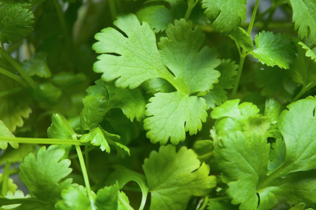
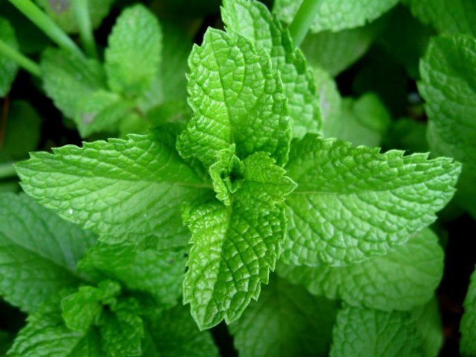
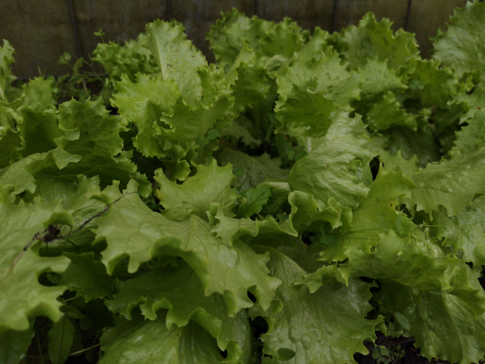
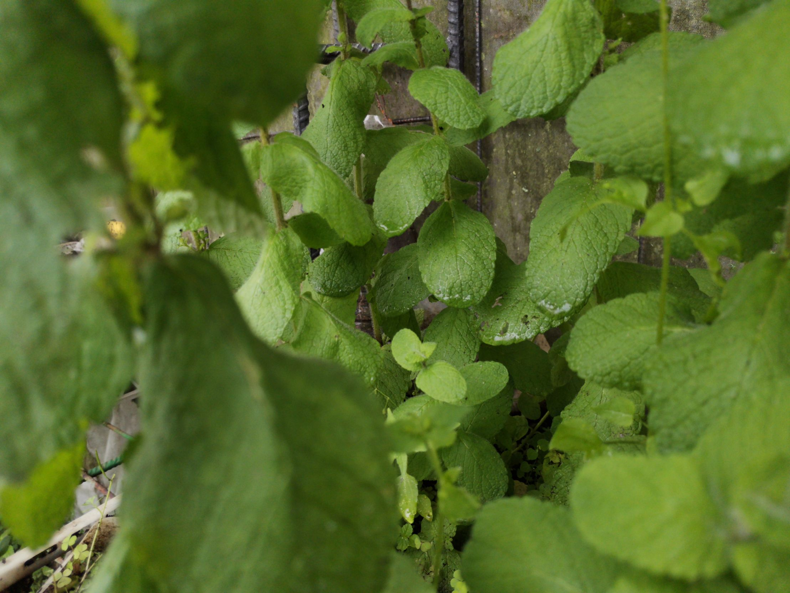
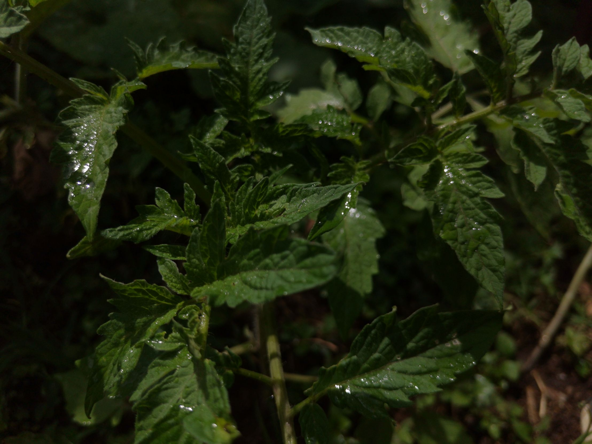
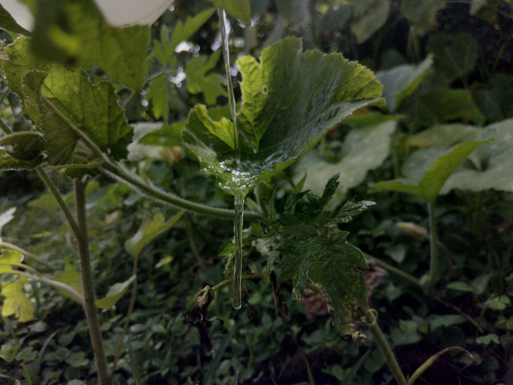

- Romero

Salvia rosmarinus
-
Culantro

Coriandrum sativum
-
Hierba Buena

Mentha Spicata
-
Lechuga

Lactuca sativa
-
Menta

Mentha
-
Tomate

Solanum lycopersicum
-
Ayote

Cucurbita argyrosperma
- Proin porta arcu ac elit malesuada pulvinar.
- Phasellus vitae felis sit amet mi gravida volutpat.
- Curabitur vulputate urna non efficitur interdum.
- Curabitur dapibus enim in consectetur imperdiet.
- Suspendisse consectetur nibh non condimentum porta.
- Ut placerat diam in cursus aliquet.
- Praesent vitae quam id tortor malesuada viverra ut at elit.
- Vivamus feugiat justo id volutpat rutrum.
- Nulla volutpat erat non mauris condimentum, nec consequat elit posuere.
- Vestibulum eu risus efficitur, porta lacus a, mollis metus.
- Maecenas finibus arcu vel urna commodo, ac bibendum massa vestibulum.
- Praesent eleifend leo eget consectetur interdum.
- Suspendisse et lectus gravida, interdum mauris aliquet, mattis purus.
- In nec nisl feugiat, blandit odio non, vulputate neque.
- Sed id felis mollis, bibendum orci a, condimentum augue.
- Etiam eleifend ipsum nec nibh aliquam, non commodo risus eleifend.
- Curabitur in ipsum eget lacus blandit maximus in at sem.
- Curabitur sagittis ante nec libero maximus, ut imperdiet elit egestas.
- Proin congue felis sed ultrices elementum.
- Duis sit amet velit et lectus eleifend interdum non quis ex.
- Praesent congue lectus a felis pharetra malesuada.
- Sed vel mauris condimentum, egestas dolor eu, porttitor nisl.
- Donec sed elit tincidunt, accumsan magna sed, facilisis libero.
- Curabitur vel purus quis justo placerat euismod mollis ac arcu.
- Sed eget mi et justo luctus mollis ut non augue.
- Suspendisse sit amet lectus et magna euismod tempor.
- Vestibulum accumsan velit et ipsum pellentesque, vitae ultricies erat blandit.
- Pellentesque vel dolor ac risus efficitur convallis.
- Maecenas feugiat quam at facilisis dapibus.
- Cras commodo leo sit amet lacus lacinia, eget rutrum sem sodales.
- Ut sit amet risus finibus, iaculis lectus sit amet, varius lectus.
- Duis dignissim elit eget erat maximus luctus.